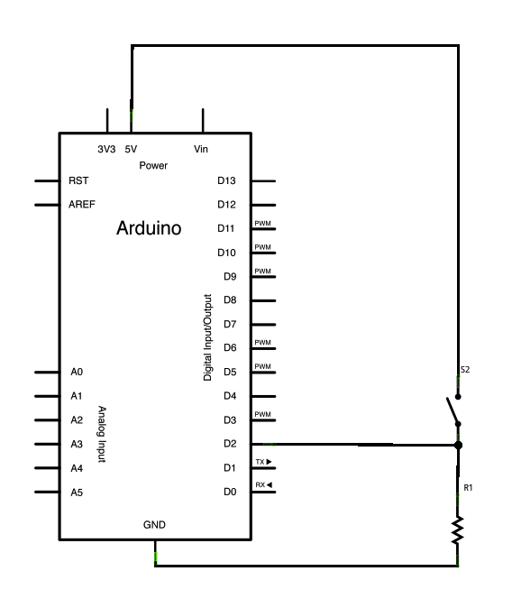
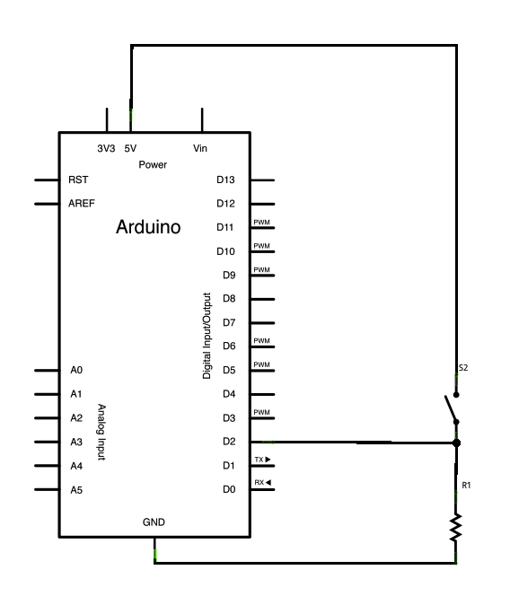

/*
Blink
Turns on an LED on for one second, then off for one second, repeatedly.
Most Arduinos have an on-board LED you can control. On the UNO, MEGA and ZERO
it is attached to digital pin 13, on MKR1000 on pin 6. LED_BUILTIN is set to
the correct LED pin independent of which board is used.
If you want to know what pin the on-board LED is connected to on your Arduino model, check
the Technical Specs of your board at https://www.arduino.cc/en/Main/Products
This example code is in the public domain.
modified 8 May 2014
by Scott Fitzgerald
modified 2 Sep 2016
by Arturo Guadalupi
modified 8 Sep 2016
by Colby Newman
*/


 
